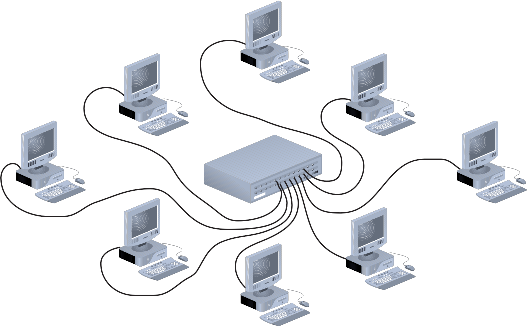
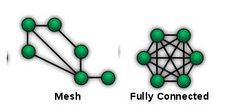
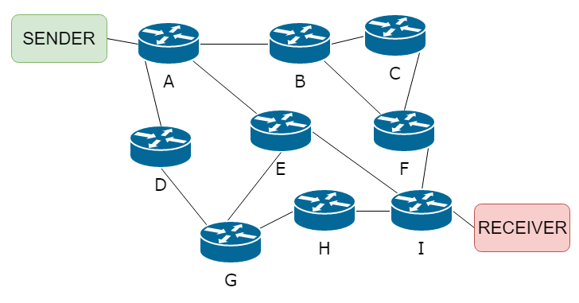
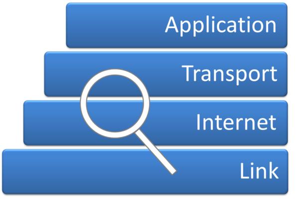

How do computers communicate, and what rules govern data transfer across networks?
A network is two or more computers connected to share resources and communicate. A LAN (Local Area Network) is confined to one building or site and uses hardware owned by the organisation; a WAN (Wide Area Network) spans large geographical distances and typically uses infrastructure owned by a third party (the Internet is the world's largest WAN). Networks can be arranged so that one central server provides services to client computers (client-server) or so that all computers share equal roles and resources directly (peer-to-peer).
Protocols are the rules that govern how data is packaged, addressed, and delivered. TCP/IP handles the overall routing of data across the Internet; HTTP and HTTPS govern web page transfer; FTP is for file transfers; SMTP/POP/IMAP handle email (send, retrieve-download, retrieve-leave-on-server). A DNS (Domain Name Server) converts human-readable URLs into IP addresses — without it you would need to remember a number like 142.250.185.68 instead of google.com. The concept of layers allows different parts of the protocol stack to be changed independently, like swapping one part of a machine without rebuilding the whole thing.




Diagrams: PG Online (Paul Long), OCR J277 textbook. Used under the school site licence.